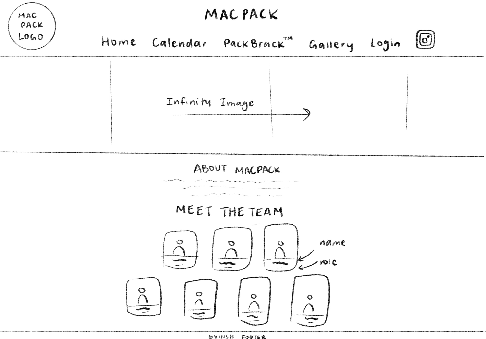
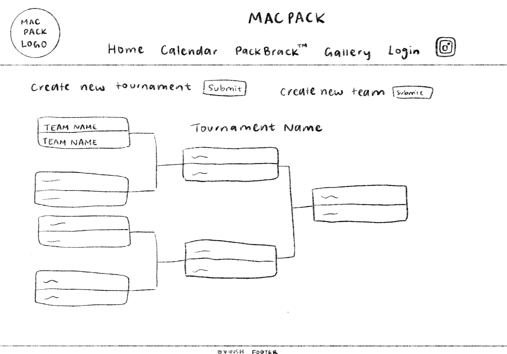
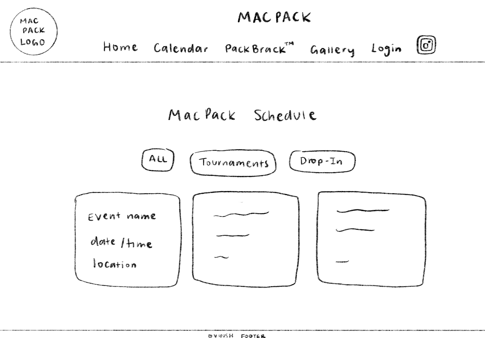
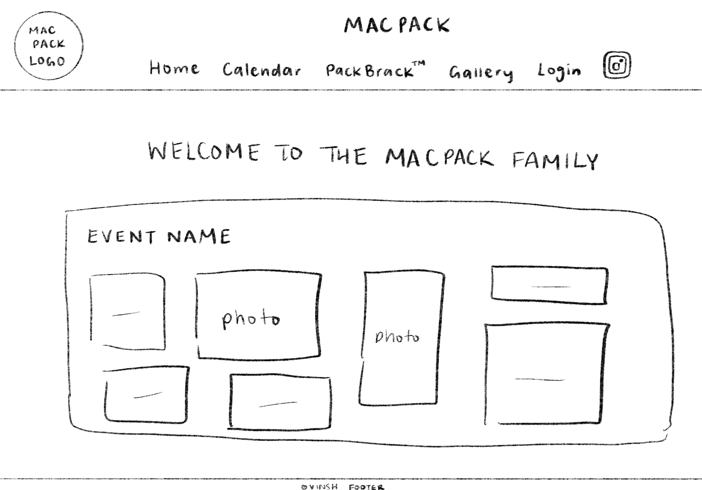

Vinsh
Victory in HTML
Final Developmental Plan
April 20th, 2026
CS 1XD3, Dr. Sam Scott
Victor, Isaac Corman, Nicole Carter, Sara O’Coin, Hassan Ibrahim
1. Names: Your team, the client, and the app
Team Name: “VINSH” Slogan: Victory in HTML
Group members: Victor, Isaac, Nicole, Sara, Hassan
Client: MacPack McMaster Recreational Athletics Club
2. Purpose
"MacPack" Website
Purpose: MacPack is a non-profit club of students at McMaster who are passionate about volleyball and team collaboration. The MacPack website is a hub for members and outside participants to view information about the club, updates of tournament brackets, a photo gallery, and a calendar with dates of games and more.
Final increment addition:
Our Client for the 1XD3 final project is “MacPack”, a nonprofit club run and founded by McMaster Students. The club’s main goal is to build an inclusive community around the sport of volleyball. They do this by hosting tournaments, drop-in days and clinics. Their club is a team of around 20 executives. Their president is Richard Jiang, along with two vice presidents Ethan Kuo and Selina Sun. They have a main group of 7 executives that we will showcase on the website.
Drop-in days are 3-4 hour periods where the club gathers at McMaster's volleyball school, assigned drop-in recreation times at the McMaster gyms like Thérèse Quigley Sport Hall (TQSH) West gym and East Aux gym. There is no membership fee or regular meetings for club members; the club wants to welcome anyone to their events at any time with no commitment. Tournaments consist of grass/beach/outdoor volleyball tournaments or indoor volleyball tournaments. Tournaments cost a one-time payment to enter your team in a spot, teams can range from 2 players to 8 players on average. MacPacks keeps a range of 8-10 teams per tournament. These Tournaments are hosted at the Oval(grass tournament), McMaster East Aux gym (indoor tournament) or Thérèse Quigley Sport Hall (TQSH) West gym.
For MacPack, images and social media are a huge part of their club and this is their main way of attracting new participants and club executives. Instagram is the biggest outlet, in terms of showcasing their events, team and mission.
This brings us to the main functions of the website and the main purpose.
1. Showcase the community and mission of MacPack to the public
The homepage consists of mission statements and simple descriptions of the club. We also have the MacPack logo presented large and an Instagram link in the navigation bar. They take great pride in their built community and team, so we have displayed their main team members and the role they take in the club. The gallery section showcases some of their favourite pictures from each event they’ve hosted.
2. Calendar, to showcase drop-in days and upcoming tournaments
The calendar is so that the general public and supporters of MacPack can easily see upcoming days where MacPack will host a Drop-In day ahead of time. Along with this, tournaments will also appear. On this tab, users can see the event information, including the location, date, time and type of event. The Calendar can also be easily changed by an admin member who possesses a password to add events to the Calendar. The calendar has a database that is updated by the admin. More information about the database is below.
3. Live tournament bracket system, “PackBrack.”
The live bracket system was the main and biggest request from our client. The client wanted a sports bracket that an admin can update live, during an ongoing torment. This is so the players can see the past scores and games. You can see elimination live anywhere on a screen, this eliminates problems regarding communication with teams and past scores. Also authentication issues, before a bracket was drawn onto a white board k=letting anyone change scores and games. This feature also showcases past games and resulted winners. The “PackBrack” is changed by an admin and through a database.
3. Data Description
Team table:
Stores all teams that can participate in a tournament and contains basic information for each team.
id - key, int, AUTO_INCREMENT
name - text
Tournaments table:
This table stores each tournament, its scheduled date and status.
id - key, int, AUTO_INCREMENT
name - text
date - date
Events table:
Table:
Stores all teams that can participate in a tournament and contains basic information for each team.
Tournaments table:
This table stores each tournament, its scheduled date and status.
Tournament teams table:
This table links teams to the tournaments they are participating in.
Matches table:
This table represents each match within a tournament bracket.
Match participants table:
This table stores the two teams competing in each match and the outcome.
4. Functions performed by the app
Homepage with navigation bar
5. Roles of Team Members
For our final increment, we delegated tasks “vertically”. Each team member did HTML, CSS, JS and PHP/Database work. This is how we efficiently split up tasks amongst 5 team members:
Calendar Page Layout (calendar.html)
Calendar Page CSS
Calendar updating functions JS
Database for calendar
packbrack.html, admin.html
Bracket CSS Layout
PackBrack and Admin JS
Data handling and display (both)
User input handling
Database functions, PHP files used in fetch commands
Overall CSS
index.html
Infinity Image JS (homepageAnim.js)
Navigation Bar CSS
Meet the team
JS/PHP for login
gallery.html
Infinity Image JS (homepageAnim.js)
Design support
JS/PHP for login
Nav Bar CSS
login.html, added some functionality to the navigation bar
Bracket CSS and CSS for the login page
login.js and auth.js
Data layout and structure for the tournament side of the database
Database functions and SQL queries in db.php
PackBrack public viewing page functionality using AJAX
PackBrack admin page and bracket editing functionality
6. Wireframes




7. The Increments
Increments
March 25th
a. Homepage & CSS
b. Create pages listed below (according to wireframes)
c. Calendar
d. Pack bracket
e. Begin creating databases
April 1st (First increment)
a. Calendar database
b. Pack bracket database
c. Add photos to gallery
d. Create admin & passwords
April 19th (Final delivery)
a. Functioning updating bracket system
b. Finishing touches
8. Client Feedback
Prior Feedback and Final Changes
1. Inquiry: How many team members and how do you want the team to be shown?
Client: We want our core 8 execs to have personal images and discriptions and for our general reps a team picture displayed.
FINAL Change: added their main 7 execs(7 was the correct number ), added roles and team pictures.
2. Inquiry: How many teams play for the tornaments and what bracket style do you want displayed?
Client: We have 8-10 teams, and we want the basic simple two sided bracket style, we should be able to change this on our side.
FINAL Change: bracket system added, with a password admin side.
3. Inquiry: Do we want users to make accounts in order to make changes to the live game bracket?
Client: No, we just want a simple password we can share and change.
FINAL Change: Single password made and stored in an database.
4. Inquiry: What type of animation is key for this website?
Client: We want our past participates and events to be displayed.
FINAL Change: Gallery page shows past winners and images of members playing.
5. Inquiry: What are your expectations. explain the live bracket page.
Client: We want a simple page where users can either log in with a password or just spectate.
When accessed, the user should be able to input team names, scores and game start and end time.
The bracket should show winners.
FINAL Change: "PackBracket" tab implmented, with user access. Functionality implimented for adding scores.
6. Inquiry: What do we want to put into the calender page?
Client: We have tornaments we want to add and drop in days.
Drop in days are just short2-3 hour events, where people can gather to play some drop in volleyball with club supporters.
These times and dates should be in the calender.
FINAL Change: The calender page is implimented with functionality and admin can add events.
7. Inquiry: What is needed in the nav bar?
Client: We want our instgram logo, with it linked to the site.
FINAL Change: The nav bar now has this. The user can press on instgram logo to be directed to instgram page.